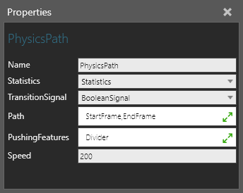
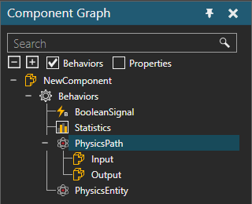

A Physics Path allows you to contain and move physical objects along a path defined by Frame features in one direction.

The ports of a Physics Path are listed with the behavior in the Component Graph panel.

The node of a Physics Path requires at least one Physics Entity behavior. By default, any feature with a collider in the same component as the Physics Path will apply a pushing force. Objects are pushed in the direction of path. You can limit the pushing force by associating one or more features with the path.
| Name | Description |
| Name | Defines the name of the path. |
| Statistics | Defines a Statistics behavior that collects statistics generated by the path. |
| TransitionSignal | Defines a Boolean Signal behavior that signals the arrival and departure of physical objects to and from the path. A True value signals the arrival of a physical object. A False value signals the departure of a physical object. |
| Path | Defines an ordered list of Frame features in the component of path that act as waypoints. The sequence of frames is important at defining the beginning and end of the path. The direction of path is interpolated along the X-axis of each frame. |
| PushingFeatures | Defines a list of features used for blocking and/or colliding with physical objects on the path. Generally, this is used to define which features in the component act as the driving force of path, for example its belt. |
| Speed | Defines the speed (mm/s) at which physical objects move along the path. |